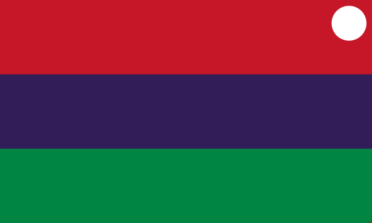

Capsovali !! :: A gender relating to caps locks. A gender that feels loud, reaching to be heard over others. A gender that feels the need to be heard. To be listened to. A gender that feels like typing endlessly in caps lock, making yourself more visible and heard.
Capso - literally just Caps + O
Vali - Loud in Estonian